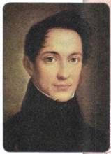
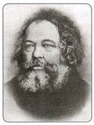
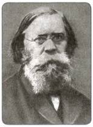
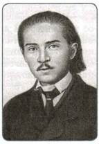
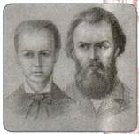
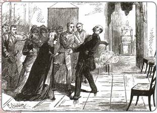
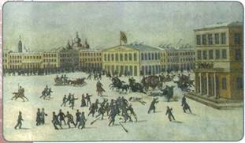
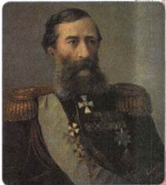
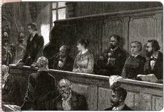

Как российское общество восприняло реформы 1860—1870-х гг.? Какие новые течения общественной мысли сформировались в этот период? С какими процессами это было связано?
Проведение масштабных реформ 1860—1870-х гг. оказало огромное воздействие на просвещённые круги общества. К началу 1860-х гг. все слои общества сходились в главном — в поддержке царя и его реформаторской деятельности, в готовности объединить силы ради перемен к лучшему. Размышления о судьбах и путях развития России приобрели особую остроту: и консерваторы, и либералы спорили о направлениях и методах преобразования российской действительности.
1. Консервативное направление
Приверженцы консервативной идеологии, как и прежде, опирались на «теорию официальной народности». Они считали, что в России необходимо сохранить неограниченную монархию, привилегированное положение дворян ского сословия, укрепить религиозность, общинные институты и патриархальный образ жизни. Во внешней политике России консерваторы развивали идею панславизма (необходимости объединения всех славянских народов). Идеи консерваторов выражала газета «Московские ведомости». Это издание было одним из самых многотиражных в России, возглавлял его влиятельный публицист, издатель, литературный критик М. Н. Катков.
Консервативное течение имело поддержку среди представителей всех сословий (дворянства, духовенства, купечества, крестьянства). Приверженцами консерватизма, борцами за незыблемость государственных устоев были также очень многие деятели правительства. Так, один из лидеров консервативного направления Д. А. Толстой занимал (до 1880 г.) сразу две важные должности — обер-прокурора Синода и министра народного просвещения. Современники отмечали, что Толстой был поборником сильной власти. Впоследствии, в правление нового императора, Александра III, Толстой занимал пост министра внутренних дел, с его именем связана политика власти по укреплению позиций дворянства и основ самодержавного строя.
2. Либеральное направление
По-прежнему продолжали свою деятельность участники либерального лагеря — славянофилы и западники. На страницах периодических изданий («Отечественные записки», «Русская беседа», «Современник» и др.) они вели обсуждение реформ и размышляли о путях развития страны.
Ещё с середины XIX в. и позже благодаря реформам в системе образования начинает складываться особый слой — разночинцы (или разночинная интеллигенция). Учебных заведений среднего и высшего уровня становилось всё больше, доступ в них открывался более широким слоям общества, нежели ранее, поэтому получить образование могли теперь не только дворяне, но и выходцы из разных сословий. Разночинцы критически смотрели на российскую действительность и были полны энергии её изменить, т. е. были настроены оппозиционно по отношению к власти.
Разночинная интеллигенция активно поддержала Земскую реформу 1860-х гг. Чтобы улучшить жизнь и быт крестьян, изменить ситуацию непосредственно на местах, разночинцы активно включились в деятельность земств. Они шли работать в земства в качестве учителей, врачей, журналистов и др. Разночинцы активно помогали в проведении в жизнь Крестьянской реформы 1861 г., становились мировыми посредниками.
Вспомните, когда и для чего был создан институт мировых посредников.
3. Радикальное направление
Многие либерально настроенные деятели в 1860—1870-е гг. изменили свою позицию по отношению к правительству. Если ранее они поддерживали правительственные реформы, то теперь постепенно стали переходить к их критике и искать другие пути изменений в стране, более радикальные — революционные (смена власти, восстания, заговоры и др.). В это время появилась прослойка тех, кто был озабочен идеей активной борьбы против режима.

А. И. Герцен
После того как началось проведение в жизнь Крестьянской реформы 1861 г., многие либеральные земские деятели разочаровались в ней: они увидели недостатки реформы, ущемление интересов крестьян.
Во многих городах сложились кружки из наиболее решительно настроенных деятелей земского либерального движения, влияние на них оказывали очень резкие статьи Н. Г. Чернышевского, А. И. Герцена, Н. П. Огарёва (опубликованные в журнале «Современник», газете «Колокол»).
Чтобы поднять крестьян на восстание ради получения настоящей воли, они распространяли прокламации, в которых призывали крестьян к немедленному всеобщему бунту.
В конце 1861 г. эти кружки объединились в организацию «Земля и воля» (название произошло от основной цели, которую преследовали участники, — добиться для крестьян освобождения на новых условиях). Однако крестьянского восстания землевольцы добиться так и не сумели. Довольно скоро наступило разочарование, и в 1864 г. эта организация распалась. Крестьяне, вопреки ожиданиям, оказались глухи к подобным призывам.
Среди разночинцев распространились настроения нигилизма. Одним из наиболее ярких выразителей идеологии нигилизма стал Д. И. Писарев. В своих статьях он отрицал общепринятые ценности, идеалы, даже моральные нормы (термин «нигилизм» происходит от латинского слова nihil — ничто).
Подобное отрицание всего ради достижения своих целей привело к формированию радикальных настроений. Приходской учитель С. Г. Нечаев предпринял попытку создать организацию («Народная расправа») для восстания против существующих порядков. В 1869 г. он написал призыв к молодёжи — «Катехизис революционера». Этот свод правил для революционеров призывал бороться с правительством любыми средствами, не рассчитывая на поддержку «тёмных» крестьянских масс, подпольно, путём заговоров и террора. «Народная расправа» была закрыта, не просуществовав и года, а её участники отданы под суд.
Однако сторонники активной борьбы с властями продолжали свою деятельность, в этом их поддерживали публицисты А. И. Герцен, Н. Г. Чернышевский и др.
Герцен после революции 1848—1849 гг. в Европе в корне пересмотрел своё отношение к Западу. Если раньше он считал Запад лидером, ведущим человечество в светлое социалистическое будущее, то теперь разочаровался в нём. Если раньше он воспринимал буржуазный строй как необходимую стадию на пути к социализму, то теперь увидел в нём безысходный тупик. Только в России, по его мнению, сохранилось то ядро, на основе которого можно построить социализм, — крестьянская община. Учение Герцена получило название русский (или общинный) социализм.
4. Народничество в 1870-е гг.
В 1870-е гг. в радикальном движении общественной мысли сложилось особое течение — народничество. Теоретиками народничества стали М. А. Бакунин, П. Л. Лавров, П. Н. Ткачёв. Все они были убеждены, что человечество неизбежно должно прийти к социализму. На Россию возлагались особые надежды из-за общинных отношений в русской деревне. Периодические переделы земли, поддержка членами общины друг друга, решение жизненно важных вопросов всем миром — всё это позволяло им рассматривать общину как зародыш социализма, как залог относительно быстрого и безболезненного перехода к новому строю.
Особенно привлекала народников возможность, опираясь на общину, достичь социализма, минуя капитализм и свойственные ему обнищание крестьянства и образование буржуазии. Чтобы решить эту задачу, считали народники, достаточно освободить (отменить) общину: передать в распоряжение крестьян всю землю, снять с них бремя непосильных налогов, избавить от контроля со стороны государства.
Сходясь в основных установках, теоретики народничества предлагали различные средства для их претворения в жизнь. М. А. Бакунин видел такое средство в бунте, в стихийном крестьянском восстании, которое, по его мнению, могло вспыхнуть в России в любую минуту. Крестьяне, считал Бакунин, к революции готовы и ждут лишь толчка, который должен последовать со стороны интеллигенции. Сторонники М. А. Бакунина составили бунтарское направление в революционном народничестве.
П. Л. Лавров также поддерживал идею крестьянской революции и рассматривал интеллигентов-революционеров как силу, способную побудить народные массы к восстанию. Но он, в отличие от Бакунина, считал, что потребуется достаточно длительный период для того, чтобы интеллигенция смогла найти общий язык с крестьянством, — период пропагандистской работы. Сторонники Лаврова образовали соответственно пропагандистское направление.
П. Н. Ткачёв, главный теоретик заговорщического направления, разделял многие взгляды С. Г. Нечаева. Ткачёв исходил из того, что разрыв между народом и интеллигенцией слишком значителен и в условиях господства самодержавия практически непреодолим. Поднять народные массы на сознательную революцию он считал делом нереальным. Освободить народ могла только интеллигенция, полагаясь исключительно на собственные силы. Поскольку же эти силы были невелики, то Ткачёв делал ставку на заговор, вооружённый переворот, захват власти. Затем революционное правительство должно было сверху провести необходимые для победы социализма преобразования.

М. А. Бакунин

П. Л. Лавров

П. Н. Ткачёв
На протяжении 1870-х гг. разночинная интеллигенция пыталась осуществить революцию в России всеми тремя описанными способами.
В начале 1870-х гг. в Петербурге, Москве, Киеве, Одессе и ряде других городов возникли кружки народников. Поначалу среди народников преобладали бунтарские взгляды Бакунина. Под их влиянием в 1874 г. началось «хождение в народ». Несколько сот пропагандистов отправились в деревню поднимать крестьян на восстание. Пропагандисты шли с наивной и, как выяснилось, совершенно ложной уверенностью, что их ждут и что достаточно нескольких пламенных слов, чтобы поднять «угнетённых» на борьбу. Однако никаких реальных результатов добиться не удалось. Крестьяне действительно были недовольны своим положением, но ждали, что улучшение придёт сверху, от царя. К пропагандистам, которые часто «шли в народ» переодетыми рабочими, коробейниками, мастеровыми, крестьяне отнеслись с недоверием и опаской. Полиция провела массовые аресты народников, однако к суду было привлечено всего 193 человека, из которых почти половину оправдали.
В 1875 г. была предпринята вторая попытка «хождения в народ», на этот раз в духе наставлений Лаврова. Пропагандисты стремились внедриться в крестьянскую среду, расположить народ к себе. Конечная цель оставалась прежней — поднять народ на революцию, смести самодержавие и дать крестьянам землю и волю. Но теперь, признав свою оторванность от народа, они пытались преодолеть её. Так, в 1870-е гг. народники стали активно участвовать в деятельности земств. Здесь они применяли на практике знания, полученные во время учёбы: лечили крестьян, учили их детей, помогали лучше организовывать хозяйство. Некоторые пропагандисты, чтобы «прикрыть» свою деятельность, обучались ремёслам — кузнечному, столярному. Наконец, были попытки организовать народнические земледельческие поселения.
В конце 1876 г. народниками была создана новая организация «Земля и воля». В этом названии предельно чётко определялись цели народников — землю и волю они хотели дать крестьянам, веря, что после этого скрытый в общи не «зародыш социализма» сам собой «пойдёт в рост». У истоков «Земли и воли» стояли революционеры Г. В. Плеханов, М. А. Натансон, А. Д. Михайлов. Позже в неё вступили А. И. Желябов, С. М. Кравчинский, В. Н. Фигнер, С. Л. Перовская и др. Всего в организации было около 200 членов. Руководил ею выборный центр в количестве 30 человек. В целом «Земля и воля» представляла собой скорее ряд кружков, чем единую централизованную организацию.
В 1879 г. внутри «Земли и воли» сложилась группа единомышленников, считавших, что, прежде чем вести широкую социалистическую пропаганду, необходимо в корне изменить государственный строй России, добиться введения конституции. А так как найти поддержку в народе невозможно, то в этой борьбе за политические права революционерам нужно рассчитывать лишь на самих себя, не надеясь на «тёмный» народ. Они считали, что единственным способом борьбы был индивидуальный террор (политические убийства), с помощью которого несколько сот человек могли надеяться сломить мощное государство, напугать правительство, заставить его пойти на уступки. Таким образом, народники взяли на вооружение идеи Ткачёва.

С. Л. Перовская и А. И. Желябов
2 апреля 1879 г. один из землевольцев — А. К. Соловьёв совершил неудачное покушение на Александра II. Это вызвало арест многих членов «Земли и воли». Вскоре после этого организация распалась.
Однако сторонники индивидуального террора не прекратили свою деятельность. Они оформились в две организации: «Народная воля» и «Чёрный передел». Последняя была разгромлена в 1880 г. и прекратила существование. Деятельность же «Народной воли» оставила заметный след в истории страны.
Поначалу «Народная воля» рассчитывала развернуть террор очень широко. Её членами были многие землевольцы 1870-х гг.: А. И. Желябов, А. Д. Михайлов, Н. А. Морозов, С. Л. Перовская, В. Н. Фигнер и др. Убив нескольких наиболее «вредных», с их точки зрения, представителей власти, они сосредоточили все основные силы на организации покушения на Александра II.
Народовольцы организовали настоящую «охоту на царя», совершив серию покушений на государя (всего шесть).
Был организован ряд покушений, которые хотя и не удались, но произвели чрезвычайно сильное впечатление и на правительство, и на общество. Так, в ноябре 1879 г. народовольцы совершили подкоп под железную дорогу недалеко от Москвы, заложили мину и взорвали царский поезд (царь проехал раньше в другом поезде). В феврале 1880 г. зал в Зимнем дворце, где царь собирался принять иностранных гостей, был взорван. Однако погибли и были ранены в основном солдаты охраны. Этот страшный взрыв был подготовлен и произведён членом «Народной воли» С. Н. Халтуриным.
Покушение, совершённое членами «Народной воли» 1 марта 1881 г., привело к убийству Александра II.

В. И. Засулич стреляет в Ф. Ф. Трепова
5. Реакция власти
Быстрый рост революционного движения не мог не тревожить правительство, которое пыталось найти действенные способы борьбы с ним.
Большинство предлагаемых мер сводилось к усилению контроля, ужесточению наказаний. Выступали, например, за восстановление в тюрьмах отменённых телесных наказаний. В духе этих предложений петербургский градоначальник Ф. Ф. Трепов приказал в нарушение закона выпороть одного из политических заключённых. Вскоре после этого, в январе 1878 г., на Трепова было совершено покушение. Народница В. И. Засулич выстрелом из пистолета ранила его. Суд над Верой Засулич, вызвавший огромный интерес, закончился тем, что присяжные оправдали её. Это показало, что деятельность революционеров, в том числе и её крайние проявления, имела широкую поддержку общества. Революционеров рассматривали как борцов против правительственного произвола.

Покушение на Александра II 1 марта 1881 г.
После 1878 г. политические дела больше не рассматривались судом присяжных. Наиболее важными из них занималось Особое присутствие Сената. Нередко обходились вообще без суда. Закон позволял полиции на местах не только арестовывать подозреваемых в совершении государственных преступлений, но и решать их дальнейшую судьбу. Их могли отправлять в ссылку в глухую провинцию, подальше от столиц и университетских центров. Подобная ссылка без суда получила название административная ссылка.
Таким образом, в ответ на рост революционного движения власть отвечала ростом собственного произвола. Однако подобные меры не давали результата: вместо заключённых в тюрьмы и сосланных революционеров тут же появлялись новые.
6. М. Т. Лорис-Meликов и его «конституция»
Правительство отвечало на народнический террор усилением преследований, казнями и ссылками террористов. Однако вскоре стало ясно, что подобные меры лишь раздражают общество, справиться же с «Народной волей» никак не удаётся.
«Народной воле» удалось достичь высочайшей конспирации. Она имела осведомителя в III отделении: туда был устроен на службу член организации И. В. Клеточников, получивший доступ к секретным материалам. В результате «Народная воля» совершала покушение за покушением, а полиция хватала, как правило, тех, кто попадал ей под горячую руку и не имел к этой организации ни малейшего отношения.
Беспомощность власти привела к резкому обострению её отношений с частью русского общества. В конце 1870-х гг. заметно оживилось и либеральное движение. На страницах даже самых умеренных изданий появлялись всё более смелые призывы к совершенствованию государственного строя, к продолжению преобразований. О том же говорилось и в целом ряде адресов, которые подавали императору земские либералы.
В этих условиях в феврале 1880 г. под впечатлением от очередной попытки покушения (взрыв в Зимнем дворце) Александр II создал Верховную распорядительную комиссию по охране государственного порядка и общественного спокойствия.
Её возглавил М. Т. Лорис-Меликов. Этот талантливый военачальник и незаурядный государственный деятель был представителем либерально настроенного чиновничества. Лорис-Меликов сохранял уверенность, что единственное спасение для России — это возвращение на путь постепенных, но последовательных преобразований, проводимых твёрдой рукой сверху.

Портрет М. Т. Лорис-Меликова. Художник И. К. Айвазовский
Лорис-Меликов не только продолжил беспощадную борьбу против революционеров, но и придал ей гораздо более упорядоченный характер. Серьёзной мерой стала реформа органов безопасности. Было ликвидировано III отделение, политическую полицию подчинили министру внутренних дел (этот пост занял сам Лорис-Меликов после ликвидации Верховной распорядительной комиссии). Полицию сделали более профессиональной, её переориентировали с массовых арестов на хорошо подготовленные точечные удары против конкретных террористов. Это принесло свои плоды. Во второй половине 1880 г. «Народной воле» был нанесён серьёзный удар: арестовали Желябова, Михайлова и ряд других руководящих членов этой организации. Был разоблачён и Клеточников.

Террористы на скамье подсудимых. Рисунок конца XIX в.
В то же время Лорис-Меликов считал, что справиться с революционерами власть сможет, лишь «помирившись» с обществом и устранив причины, порождающие революционное движение, путём реформ. Он смягчил произвол властей. Был ограничен цензурный надзор, губернаторам даны указания не притеснять без нужды земства.
Самое же главное, Лорис-Меликов представил царю проект, в котором предлагал создать подготовительные комиссии для разработки законов по наиболее важным вопросам. В отличие от подобных комиссий предшествующего времени он планировал сделать их смешанными по составу: наряду с чиновниками в них должны были быть включены выборные представители от земств. Нескольких представителей земств и городских дум предполагалось ввести и в Государственный совет, куда поступали для обсуждения все законопроекты. Таким образом, Лорис-Меликов разрабатывал проект допуска всех представителей общества к законосовещательной деятельности.
Этот проект позволил современникам говорить о «конституции» Лорис-Меликова. Конечно, привлечение представителей общества к разработке законов не означало введения полноценного конституционного строя. Однако Лорис-Меликов, несомненно, стремился заставить самодержавие «поделиться» частью власти с обществом.
Либеральные деятели поддерживали идеи Лорис-Меликова, среди них он приобрёл немалую популярность. Сторонники сохранения существующих порядков, наоборот, оценили его проект как разрушительный, как потворство революционерам. Сами же революционеры относились к Лорис-Меликову с ненавистью, справедливо полагая, что своей деятельностью он препятствует их революционным разрушительным планам.
В реформах Лорис-Меликова народовольцы видели жалкие подачки, не меняющие существа дела. В то же время они не могли не ощущать, что благодаря Лорис-Меликову значительная часть общества, до того склонная поддерживать революционеров, начала отворачиваться от них. Невзирая на все неудачи, народовольцы были полны решимости довести начатое дело до конца. Они подготовили очередное покушение на императора, которое назначили на 1 марта 1881 г.
Утром в этот день Александр II выразил полное согласие с проектом Лорис-Меликова и приказал созвать Комитет министров для его обсуждения. Однако через несколько часов на берегу Екатерининского канала на Александра II было совершено покушение, в результате которого император погиб. Взрыв первого снаряда, брошенного Н. Рысаковым, покорёжил царскую карету. Александр II выбрался из неё живым, но снаряд, брошенный другим террористом, И. Гриневицким, смертельно ранил его. Цареубийство стало высшей точкой в деятельности «Народной воли». Цареубийцы — и непосредственные участники, и организаторы — были вскоре осуждены и казнены.
Убийство императора помешало претворить в жизнь план Лорис-Меликова, более того, оно коренным образом изменило всё направление внутренней политики.
Многие историки считают события 1 марта трагедией для страны, поскольку они перечеркнули возможности мирного развития России путём реформ. Наступивший после убийства царя кризис власти и общества сделал невозможным поворот к реформам и, следовательно, похоронил план, подразумевавший установление конституционной монархии в России.
ПОДВЕДЁМ ИТОГИ
Общественное движение в период буржуазных реформ имело противоречивый характер. Если в период проведения Крестьянской реформы 1861 г произошло сближение различных точек зрения, консолидация представителей консервативного и либерального направлений, то после воплощения реформ в жизнь в связи с их неоднозначными результатами снова произошло размежевание позиций, возродились споры о путях развития России. Борьба революционеров с правительством, которая велась со всё возраставшим ожесточением на протяжении 1870-х гг., окончилась трагедией, произошедшей 1 марта 1881 г. Правительство, стремясь достичь стабильности в обществе, готовило новые реформы, которые в будущем могли иметь серьёзные последствия. Однако убийство Александра II резко изменило ситуацию и обрекло реформаторскую политику на неудачу.
Вопросы и задания для работы с текстом параграфа
1. Кто такие разночинцы? Как формирование этого слоя интеллигенции повлияло на развитие общественного движения в 1860—1870-е гг.? 2. Какие идеи отстаивали представители консервативного направления общественной мысли? Интересы какого сословия они прежде всего представляли? 3. Назовите главное отличие радикального направления от консервативного и либерального. 4. Чем занималась организация «Земля и воля» в 1860-е гг.? 5. К какой цели стремились народники? На какой основе выделились три направления в народничестве? Что они собой представляли? 6. Что такое «хождение в народ»? К чему стремились его участники? 7. Какие меры предпринял М. Т. Лорис-Меликов для нормализации обстановки в стране? В чём заключалась суть его проекта?
Думаем, сравниваем, размышляем
1. Чем организация «Земля и воля», действовавшая в 1860-е гг., отличалась от организации «Земля и воля», существовавшей в 1870-е гг.? 2. Почему участники «хождения в народ» не смогли добиться своих целей? 3. Какой тактики придерживалась «Народная воля»? Дайте морально-этическую оценку деятельности народовольцев в конце 1870-х гг. 4. Выделите главные идеи проекта Лорис-Меликова. Определите значение проекта. 5. Среди либеральных деятелей 1860— 1870-х гг. были те, кто, начав работать в земствах, вскоре разочаровался в реформах и примкнул к радикальному лагерю, и те, кто продолжал работу несмотря на препятствия. Предположите, чем руководствовались первые и вторые. Чью позицию вы считаете более верной? Объясните почему. 6. Подготовьте сообщение о том, как участники «Народной воли» организовывали покушения на императора. Дайте оценку их деятельности. Могут ли политические убийства привести к положительным результатам? Поясните своё мнение.